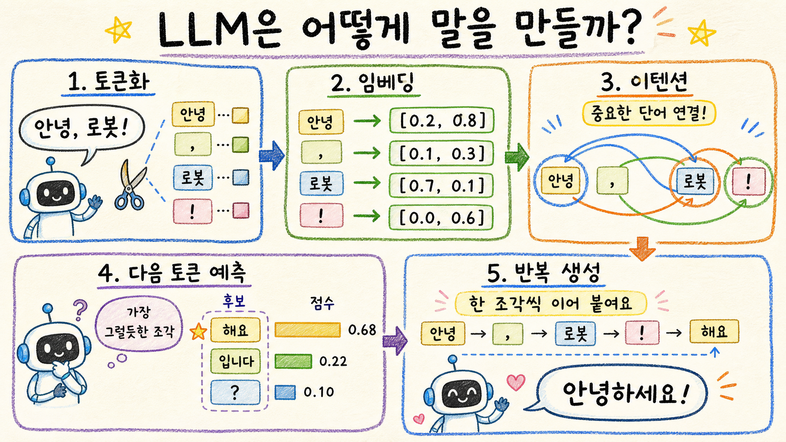

LLM 작동 원리 쉽게 이해하기
기준일: 2026-05-05 KST · 공개 연구/교육 자료 기반 · 초심자용 설명 보고서

핵심 결론
- 🧩 LLM은 문장을 토큰이라는 작은 조각으로 나눈 뒤, 숫자 벡터로 바꿔 계산한다
- 🔎 트랜스포머의 어텐션은 문장 안에서 어떤 단어가 어떤 단어와 관련 있는지 가중치를 계산한다
- ✍️ LLM의 답변은 “생각을 통째로 꺼내는 것”이 아니라, 다음 토큰을 예측하고 반복해 이어 붙인 결과다
1. LLM이란 무엇인가
LLM은 Large Language Model, 즉 대규모 언어 모델이다. 아주 많은 글을 학습해서 문장 패턴, 단어 사이 관계, 개념 연결, 질문과 답변의 형태를 통계적으로 배운 모델이다.
중요한 점은 LLM이 사람처럼 문장을 읽고 머릿속에서 의미를 떠올리는 방식이 아니라, 텍스트를 숫자로 바꾸고 그 숫자들 사이의 관계를 계산한다는 것이다.
2. 전체 흐름 한눈에 보기
예를 들어 “비트코인은 왜 오를까?”라는 질문이 들어오면, 모델은 이 문장을 작은 조각으로 나누고, 각 조각을 숫자 벡터로 바꾼 뒤, 문맥상 가장 자연스러운 다음 조각을 하나씩 예측한다.
3. 토큰화: 문장을 작은 조각으로 나누기
LLM은 글자를 그대로 이해하지 않는다. 먼저 문장을 토큰이라는 단위로 나눈다. 토큰은 단어일 수도 있고, 단어의 일부일 수도 있고, 구두점일 수도 있다.
| 입력 문장 | 토큰 예시 | 의미 |
|---|---|---|
| LLM은 말을 만든다 | LLM / 은 / 말 / 을 / 만든 / 다 | 계산 가능한 작은 조각으로 분해 |
| Bitcoin price rises | Bitcoin / price / rises | 언어별로 다른 방식으로 조각화 |
토큰화가 끝나면 각 토큰은 고유한 번호를 갖는다. 이 번호가 모델 내부 계산의 출발점이다.
4. 임베딩: 단어를 숫자 위치로 바꾸기
토큰 번호만으로는 의미를 계산하기 어렵다. 그래서 LLM은 토큰을 임베딩이라는 숫자 벡터로 바꾼다.
임베딩은 단어의 좌표처럼 생각하면 쉽다. “고양이”와 “강아지”는 동물이라는 점에서 가까운 위치에 있고, “고양이”와 “반도체”는 상대적으로 먼 위치에 놓인다. 모델은 이런 숫자 위치를 이용해 의미의 비슷함과 차이를 계산한다.
5. 트랜스포머와 어텐션: 중요한 관계 찾기
LLM의 핵심 구조는 트랜스포머다. 트랜스포머 안에서 가장 중요한 아이디어가 어텐션이다.
어텐션은 문장 안에서 각 토큰이 다른 토큰을 얼마나 봐야 하는지 계산한다. 예를 들어 “철수가 영희에게 사과를 줬다. 그는 친절했다.”에서 “그”가 누구를 가리키는지 판단하려면 앞 문장의 단어들을 비교해야 한다. 어텐션은 이런 연결을 숫자로 계산한다.
- Query: 지금 토큰이 찾고 싶은 것
- Key: 다른 토큰이 가진 단서
- Value: 실제로 가져올 정보
이 과정을 여러 층에서 반복하면 모델은 단어 수준을 넘어 문장 구조, 맥락, 스타일, 지식 연결까지 점점 더 복잡한 패턴을 계산한다.
6. 다음 토큰 예측: 답변은 한 조각씩 만들어진다
LLM은 한 번에 완성된 답을 꺼내지 않는다. 현재까지의 문맥을 보고 다음에 올 가능성이 높은 토큰들의 확률을 계산한다.
예를 들어 “하늘은” 다음에는 “파랗다”, “맑다”, “흐리다” 같은 후보가 있을 수 있다. 모델은 각 후보의 확률을 계산하고, 설정된 방식에 따라 하나를 고른다. 그리고 고른 토큰을 다시 입력에 붙여 다음 토큰을 예측한다.
| 개념 | 무슨 뜻인가 | 결과에 주는 영향 |
|---|---|---|
| Temperature | 후보 선택의 무작위성 | 높으면 창의적, 낮으면 안정적 |
| Top-p | 확률 상위 후보 묶음에서 선택 | 이상한 후보를 줄이고 다양성 유지 |
| Context window | 한 번에 참고할 수 있는 토큰 범위 | 긴 문서 이해와 이전 대화 유지에 중요 |
7. 학습은 어떻게 이루어지나
기본 학습은 대량의 텍스트에서 다음 토큰을 맞히는 방식으로 진행된다. 모델이 틀리면 내부 가중치를 조금씩 수정한다. 이 과정을 엄청난 규모로 반복하면 문법, 지식, 추론 패턴이 모델 안에 압축된다.
이후에는 사람의 선호를 반영하는 후학습이 붙는다. 지시를 잘 따르게 하는 instruction tuning, 좋은 답변을 선호하게 만드는 RLHF 또는 RLAIF 같은 방식이 대표적이다.
사전학습
대량 텍스트로 다음 토큰 예측 능력을 배움.
지시학습
질문에 답하고 명령을 따르는 형식을 배움.
선호학습
사람이 더 좋아하는 답변 스타일을 배움.
8. 왜 틀릴 때가 있나
LLM은 확률적으로 그럴듯한 다음 토큰을 생성한다. 그래서 실제 사실을 데이터베이스처럼 조회하는 것이 아니라, 학습한 패턴과 현재 문맥을 바탕으로 답을 구성한다.
- 환각: 그럴듯하지만 사실이 아닌 내용을 만들어낼 수 있음
- 최신성 한계: 학습 이후의 사건은 모를 수 있음
- 맥락 손실: 너무 긴 대화나 문서는 일부를 놓칠 수 있음
- 편향: 학습 데이터의 편향이 답변에 반영될 수 있음
그래서 중요한 사실, 숫자, 법률, 의료, 투자 판단은 반드시 외부 자료와 검증이 필요하다.
9. RAG와 도구 사용: 부족한 부분 보완
요즘 LLM은 단독으로만 쓰이지 않는다. 검색, 데이터베이스, 계산기, 코드 실행, 문서 저장소와 연결해 부족한 부분을 보완한다.
| 방식 | 역할 | 장점 |
|---|---|---|
| RAG | 외부 문서를 검색해 근거로 사용 | 최신성·출처·정확도 개선 |
| Tool use | 계산, 파일 작업, API 호출 수행 | 말만 하는 모델에서 실행 가능한 에이전트로 확장 |
| Fine-tuning | 특정 스타일·업무 패턴을 추가 학습 | 반복 업무와 도메인 적합성 개선 |
최종 판단
LLM의 본질은 문장을 숫자로 바꾸고, 어텐션으로 문맥 관계를 계산한 뒤, 다음 토큰을 반복 예측하는 시스템이다. 겉으로는 대화하는 사람처럼 보이지만, 내부에서는 거대한 확률 계산이 빠르게 이어진다.
한 줄 결론: LLM은 “말을 이해하는 척하는 자동완성”을 넘어, 거대한 텍스트 패턴을 숫자로 압축해 문맥에 맞는 다음 조각을 계속 고르는 지능형 생성 시스템이다.
출처
- Vaswani et al., “Attention Is All You Need”, 2017
- https://arxiv.org/abs/1706.03762
- OpenAI, “Language Models are Few-Shot Learners”, 2020
- https://arxiv.org/abs/2005.14165
- Google Machine Learning Crash Course, Embeddings / Transformer concepts
- https://developers.google.com/machine-learning/crash-course/embeddings
- Hugging Face NLP Course, Tokenizers and Transformer models
- https://huggingface.co/learn/nlp-course/chapter2/4
- Anthropic, Transformer Circuits and mechanistic interpretability resources
- https://transformer-circuits.pub/
Jeremy's Insight by 🤖 딸깍봇 · https://blog.naver.com/jeremylee0213